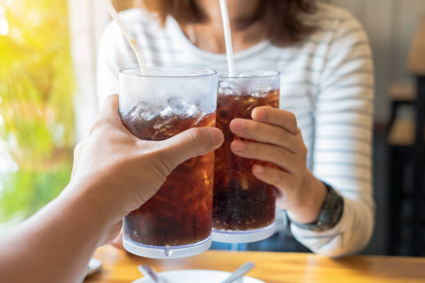
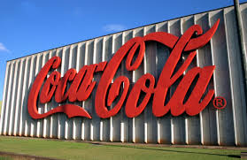

Olá! Seja muito bem vindo ao nosso fã clube, aqui como você já deve
ter percebido, temos o nosso principal foco uma das bebidas mais
comercializadas do mundo que é conhecido por muitos como a querida
"coquinha gelada", aqui temos todo o tipo de atividade relacionada a
saborosa bebida gelada, se procura noticias, curiosidades, e até um
pouco de história aqui você irá encontrar! estamos online 24 horas
por dia, e sempre atentos ao chat e sempre trocando uma ideia.
Se
inscreva no nosso fã clube! e esteja por dentro de tudo que acontece
com a Coca-Cola. 
| Paises com a Coca-Cola mais cara | ||
|---|---|---|
| Suíça | U$4.02 | R$15.19 |
| Noruega | U$3.34 | R$12.62 |
| Dinamarca | U$3.33 | R$12.58 |
| Áustria | U$2.98 | R$11.30 |
| França | U$2.66 | R$10.08 |
| Finlândia | U$2.61 | R$9.89 |
| Alemanha | U$2.53 | R$9.59 |
| Bélgica | U$2.53 | R$9.59 |
| Países Baixos | U$2.48 | R$9.40 |
| Islândia | U$2.47 | R$9.36 |
| Fonte: www.consumidormoderno.com.br | ||
| Ingredientes Coca-Cola |
|---|
| Água gaseificada |
| Açúcar |
| Extrato de noz de cola |
| Cafeína |
| Corante caramelo IV |
| Acidulante ácido fosfórico |
| Aroma natural |
| Fonte: www.cocacolabrasil.com.br |
Um dos sabores mais reconhecidos no mundo nasceu na cidade de Atlanta, estado da Georgia, nos Estados Unidos. Era 8 de maio de 1886. Dr. John Stith Pemberton, um farmacêutico da região, produziu o xarope com a fórmula da Coca-Cola, e levou uma jarra do novo produto pelas ruas até a Jacobs’ Pharmacy, onde amostras foram vendidas a cinco centavos o copo. Água gaseificada era o que completava a mistura do novo xarope para produzir a bebida “deliciosa e refrescante”, slogan que ecoa até hoje onde quer que alguém curta uma Coca-Cola. 